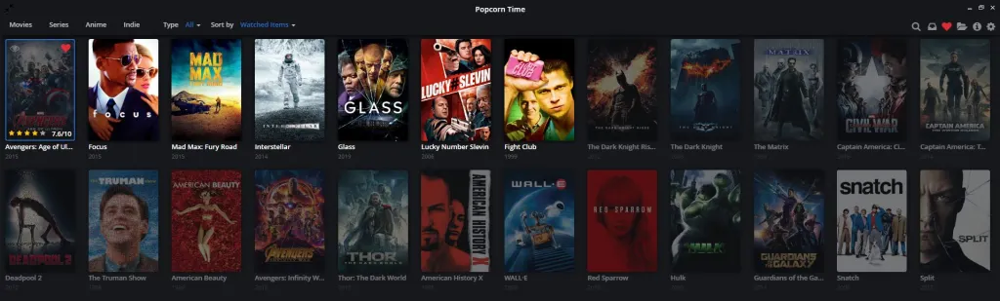

<section class="vh-900 gradient-custom"> 
    <div class="header">
      <div id="carouselExampleAutoplaying" class="carousel slide" data-bs-ride="carousel" data-bs-interval="1000">
        <div class="carousel-inner">


          <div class="carousel-item active">
            
          </div>
          <div class="carousel-item">
            
          </div>
          <div class="carousel-item">
            
          </div> 
     
          <div class="carousel-item">
            
          </div> 
          <div class="carousel-item">
            
          </div>
          <div class="carousel-item">
            
          </div>
    
        </div>
    
        <button class="carousel-control-prev" type="button" data-bs-target="#carouselExampleAutoplaying" data-bs-slide="prev">
          <span class="carousel-control-prev-icon" aria-hidden="true"></span>
          <span class="visually-hidden">Previous</span>
        </button>
        <button class="carousel-control-next" type="button" data-bs-target="#carouselExampleAutoplaying" data-bs-slide="next">
          <span class="carousel-control-next-icon" aria-hidden="true"></span>
          <span class="visually-hidden">Next</span>
        </button>
      </div>
    </div>
    <div class="container m-6 ">
      <div class="row">
        <div class="col-md-3" *ngFor="let item of movieData;let i=index">
          <mat-card class="example-card">
            <mat-card-header>
              <div mat-card-avatar class="example-header-image"></div>
              <mat-card-title>{{item?.title}}</mat-card-title>
              <mat-card-subtitle>{{item?.release_date}}</mat-card-subtitle>
            </mat-card-header>
            
            <mat-card-actions>
              <!-- <button mat-icon-button color="white" (click)="toggleLike(item)">
                <mat-icon [ngClass]="{'red-icon': item.liked}" color="white">favorite</mat-icon>
              </button> -->
    
            
            </mat-card-actions> 
          </mat-card>
        </div>
        <div style="display: flex; justify-content: center; margin: 20px 0;">
          <button [disabled]="currentPg<=1" (click)="decreasePage()" mat-raised-button class="prev-next-btn">
            <mat-icon>navigate_before</mat-icon> PREVIOUS PAGE </button>
          <button [disabled]="currentPg>=this.totalPages" (click)="increasePage()" mat-raised-button
            class="prev-next-btn">NEXT PAGE <mat-icon>navigate_next</mat-icon>
          </button>
        </div> 
      </div>
      <div  class="button-container">
       
        <button type="button" class="btn btn-success"(click)="scrollToTop()"><mat-icon>keyboard_arrow_up</mat-icon></button>
      </div>
    </div>
    </section> 


     